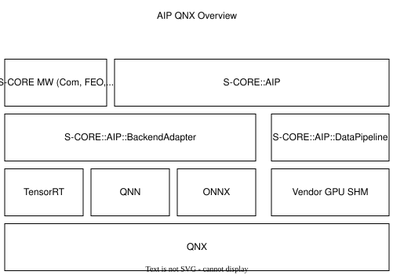
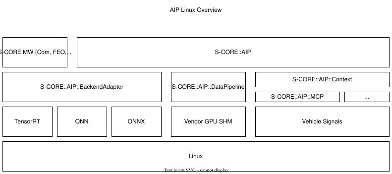
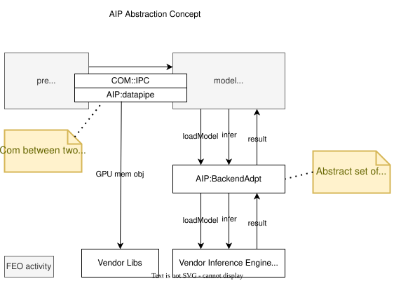

AI Platform#
AI-Platform
|
status: draft
security: NO
safety: ASIL_B
|
||||
Feature flag#
To activate this feature, use the following feature flag:
experimental_ai_platform
Abstract#
This feature request outlines the foundational requirements for integrating AI workloads into the S-CORE automotive platform, with a particular emphasis on enabling inference capabilities across both QNX and Linux operating systems. The primary goal is to provide support for ASIL-B compliant use cases on QNX through a thin, vendor-agnostic abstraction layer for AI backends such as TensorRT or QNN. For non-safety-critical applications, a standardized inference backend—such as ONNX Runtime—should be supported, despite its current lack of compatibility with QNX. Generative AI (GenAI) workloads are part of the platform scope on Linux, enabling on-device LLM inference for intelligent in-vehicle interactions. The platform’s support for GenAI is outlined in a seperate feature request Gen AI.
The document proposes extending S-CORE components (e.g., FEO, Communication, Error Handling) to support AI models natively, avoiding duplicate logic across software domains. Furthermore, it introduces a scoped investigation into GPU shared memory (SHM) and data pipelining mechanisms to abstract communication of GPU-resident objects.
Motivation#
The AI Platform is needed to support the industry’s transition from traditional rule-based systems and fixed-function ECUs to software-defined and increasingly AI-defined vehicles. As automotive platforms evolve, intelligent systems must be able to process perception, planning and driver interaction using machine-learned behavior. The AI Platform enables modular, safety-aligned integration of ML and GenAI components and provides the foundation for moving from a Software-Defined Vehicle (SDV) architecture to an AI-Defined Vehicle (AIDV).
Rationale#
This approach in this Feature Request was selected to ensure a modular, certifiable, and platform-agnostic AI integration layer for automotive applications. By abstracting inference backends and structuring data flow through standardized interfaces, the architecture enables safety certification (ASIL-B), supports reuse across Linux and QNX, and allows for flexibility in deploying both ML and GenAI models. It balances the need for runtime efficiency, safety alignment, and support for future AI-defined vehicle concepts.
Specification#
This feature request aims to extend the S-CORE platform to support AI workloads across both QNX and Linux environments, enabling safe and efficient execution of models for both safety-critical and non-critical automotive functions. The architectural concept focuses on a modular inference pipeline, supporting a unified abstraction for AI model execution, backend integration, and GPU-based communication.
Operating System Support and ASIL Alignment#
The platform must support both Linux and QNX, with differing priorities and use-case profiles. QNX is prioritized (Priority 1) due to its relevance in safety applications. Linux support (Priority 2) primarily targets non-safety-critical applications. Safety use-cases will adhere to the constraints imposed by functional safety requirements, whereas Linux allows for more flexible development. All features available on QNX will also be available on Linux.
QNX#
The figure below shows the high level scope for the QNX platform with a target of ASIL-B. The two main components are the Vendor Abstraction (Backend Adapter) and the Data Pipeline.

Linux#
The next figure shows the scope of the Linux-based platform. All components running on QNX shall also run on Linux - but not the other way around. In addition to the QNX scope, GenAI related components like MCP Server a Context API included.

Inference Backend Integration and Abstraction Layer#
The idea of this component is to provide a lightweight and certifiable abstraction layer that decouples applications from vendor specific APIs.
To provide model execution capability, the system must support inference backends via a thin abstraction layer. This layer will expose a unified interface to the upper layers of the stack while delegating execution to optimized vendor runtimes underneath — such as TensorRT for NVIDIA, or QNN for Qualcomm-based systems. For non-safety use cases, a standardized backend like ONNX Runtime [1] should be supported to ensure portability and developer accessibility. However, ONNX Runtime currently lacks QNX support - which will further be investigated.
Concept#
The diagram below illustrates the architecture of the AIP Abstraction Layer - here called ModelAPI. It highlights how a unified Adapter Interface allows seamless integration with different hardware-dependent inference backends (e.g. ONNX Runtime, TensorRT), as well as a mock backend for testing. The IOUtils module handles preprocessing and input preparation. Keeping IOUtils as a separate library helps isolate input handling logic from inference logic, making it easier to test, reuse, and extend preprocessing across different models and backends. This structure allows isolating and certifying components independently, which is essential for scalable safety certification.
Key benefits of this concept include:
Static backend selection at compile time ensures deterministic behavior and reduces runtime complexity
Clear separation of responsibilities (e.g., IOUtils vs inference adapters) supports modular safety analysis
MockAdapter enables early testing and CI validation without requiring hardware targets
Minimal and auditable abstractions make the system easier to verify and validate, especially when wrapping certified inference engines (when used as a Safety Element out of Context, SEooC)
Adapter Class#
The class diagram below shows the object-oriented structure of the Adapter system. All backend adapters inherit from a shared abstract interface, ensuring consistent model loading and inference APIs across implementations. One of the main challenges of this approach is to find the common set of features between all backend APIs to be abstracted. Finding the right balance between abstraction and feature set may be challenging.
Backend Selection Mechanism#
The following diagram shows how the backend implementation is selected at compile time via CMake flags. Depending on the configuration, either the ONNX Runtime, TensorRT, or a mock adapter is compiled into the application. The static backend selection at compile time ensures deterministic behavior and reduces runtime complexity which simplifies certification.
Data Pipelining and GPU Communication Abstraction#
Many models — especially vision-based ones — depend on high-throughput data exchange in GPU memory. To support efficient data flow, the architecture should provide a data pipelining layer that abstracts objects in the GPU memory space.
This may include:
Shared memory buffers between producer (e.g. camera driver) and consumer (e.g. model preprocessing)
Zero-copy mechanisms to minimize CPU-GPU transfers and reduce latency
Standardized data contracts for tensor formats and metadata
A key challenge here is observability: current S-CORE recording may not capture GPU-to-GPU data flows. A second challenge is the tight coupling of GPU memory object to vendor specific libraries. Therefore, the exact scope and feasibilty of this component and its respective gaps must be investigated in-depth by a future feature request.
The figure below shows the high level concept of a data pipeline and backend adapter.

S-CORE Integration: FEO, Communication, and Fault Management#
AI model execution should be integrated into existing S-CORE components — not implemented as a standalone subsystem.
This includes:
FEO: Integration allows AI tasks to be scheduled and monitored like any other activity
Communication: Model inputs and outputs must seamlessly fit into the existing communication model
Error Handling: Faults and anomalies during inference (e.g., invalid input tensors, timeout, memory access issues) must be reported and handled using S-CORE’s diagnostic framework
Recording: Data between AI/ML nodes with GPU memory object should be recordable in the same manner as regular IPC communication
This unified approach avoids fragmentation and ensures that AI models are treated as first-class citizens within the system.
GenAI#
The platform’s support for Generative AI (GenAI) is outlined in a seperate feature request Gen AI.
Requirements#
The related requirements can be found in Requirements.
Backwards Compatibility#
Backwards compatibility to current systems is ensured by supporting established frameworks and only providing light weight abstractions and support-components around it.
Security Impact#
The AI Platform introduces several new attack surfaces that require security considerationss. Therefore, the overall security architecture must be revisited in detail to assess and mitigate potential risks.
The following non-complete list highlights a few security considerations per component.
- Inference Backends
Ensure that model binaries are verified, authenticated, and integrity-checked before execution
Restrict model file loading to trusted paths and signed artifacts to prevent tampering or malicious injection
Safety Impact#
The AI Platform is designed to support both QM and ASIL-B use cases, with a clear separation between safety-relevant and non-safety-relevant functionality.
The following list gives an idea of safety considerations and is not complete. An in-depth safety analysis must be conducted in the future.
- Inference Backends
For safety-related features (e.g. perception), inference backends must be certified
The backend abstraction layer must be minimal and deterministic to allow safety analysis and independent certification - it must achieve at least the same ASIL-level as the backends
- Data Pipelines
GPU-based data flows used in safety functions must ensure determinism, bounded latency, and isolation from non-safety components
Zero-copy paths must ensure safe memory access patterns and partitioning
License Impact#
The AI Platform is expected to be implemented primarily using Free and Open Source Software (FOSS), in alignment with the Eclipse Foundation’s licensing principles.
All new components (e.g. abstraction layers, adapters, GenAI interfaces) developed under this feature shall be licensed under the Apache 2.0 License
Third-party runtime dependencies such as ONNX Runtime or llama.cpp are also licensed under permissive FOSS licenses (MIT, Apache 2.0), making them compatible with the overall platform license
Any optional use of proprietary or closed-source AI runtimes (e.g. vendor-specific TensorRT libraries) must be isolated behind the backend abstraction and excluded from the FOSS-licensed deliverables
No additional licensing constraints are introduced by this feature request beyond those already adopted in S-CORE.
How to Teach This#
The following sources are recommended for onboarding:
ONNX Runtime GitHub Repo [1]
And of course: Udemy, Youtube, Google, etc.
Rejected Ideas#
Dynamic runtime backend selection was rejected to ensure deterministic behavior and reduce runtime complexity, particularly for ASIL-B use cases. Static backend selection at build time enables better certification and minimizes safety risks.
Direct integration of inference logic into applications without a common abstraction layer was rejected to avoid code duplication, maintain modularity and enable cross-platform backend support. The adapter-based architecture allows better testability and reuse across QNX and Linux as well has HW platforms.
Open Issues#
GPU shared memory data pipeline and tight coupling of GPU memory object to vendor specific libraries
ONNX support on QNX
S-CORE recording may not capture GPU-to-GPU data flows
Decide on inference engine for QNX (e.g. ONNX, LiteRT, ExecuTorch)